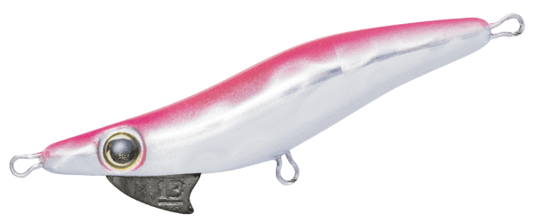
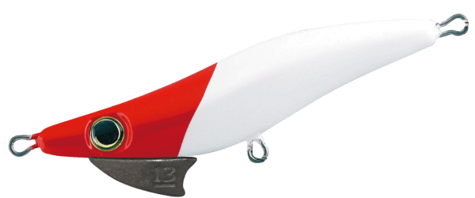
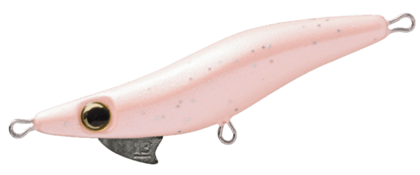
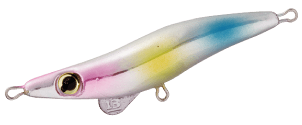

ミニマルエボロジー
（minimaru Evology）
ミニマルエボロジー（minimaru Evology）はBREADEN（ブリーデン）のライトゲームプラグです。
生物的な「静」と「動」。トップ〜宙層〜ボトムを完全攻略。メバルなどのライトゲームで使うプラグです。
「自然界に存在し得る」をテーマに、生命感あふれるシャープなアクションと、自然界にありそうなナチュラルな動きの移り変わり、フォールバランスを形にしたエギ型プラグの進化系です。

画像出典:BREADEN公式HP
スペック
- メーカー
- BREADEN（ブリーデン）
- タイプ
- 50shallow（シャロー）・50normal（スタンダード）・50deep（ディープ）
- 全長
- 50mm
- 重量
- 50shallow・50normal：2.6g／50deep：3.6g
- ボディ
- ウレタンソリッド
- ターゲット
- メバルなどのライトゲーム
- 価格
- 1,100円（税別）
▼今すぐチェック
ミニマルエボロジーの特徴
「静」と「動」、そしてその間の時間を支配する
-
エギ型プラグの進化系
生命感のあるシャープなアクションと、自然界にありそうなナチュラルな動きの移り変わりを形にした。ほかのプラグでは出せない「静」と「動」で、今まで食わせられなかった魚にも口を使わせる。
-
ウレタンソリッドの繊細なバランス
ウレタンソリッドの繊細なボディバランスで、さまざまな状況や魚種に対応する。
-
3タイプでレンジを攻め分け
シャロー・ノーマル・ディープの3タイプで、水面からボトムまでイージーにもテクニカルにも攻められる。
ミニマルエボロジーの使い方
基本はロッドで軽くアクションを付けてから、止めて見せる「動」と「静」の組み合わせです。
ただ巻きでも使えますが、アクションの後のフォールやステイで食わせるのがミニマルらしい使い方。浅い場所はシャロー、まずはノーマル、深い場所や流れのある場所はディープと、タイプでレンジを選びましょう。
ミニマルエボロジーの得意な状況
メバルのほか、さまざまな魚種を狙うライトゲーム全般で使えます。
ワームやほかのプラグに反応しない魚に、「静」と「動」の違いで口を使わせたい時が得意です。
ワンポイント
65mmモデル（5.4g）も開発中と公式で案内されています。
ミニマルエボロジーのタイプの使い分け
| モデル | 重さ | 特徴 |
|---|---|---|
| 50shallow | 2.6g | シャロータイプ。浅い場所や表層寄りに |
| 50normal | 2.6g | スタンダードタイプ。まずはこれ |
| 50deep | 3.6g | ディープタイプ。深いレンジや流れのある場所に |
※数値は公式ページより。全長はいずれも50mmです。
オススメカラー
ミニマルエボロジーは全10色。そのうち4色を紹介します（画像は公式のカラーチャートより）。

マグマシルバー／ピンクバックまず1つ選ぶならこの色。シルバーのフラッシングとピンクの背中。

マットレッドヘッド定番のレッドヘッド。光りすぎないマット仕上げ。

サクラグローグロー入りで、夜や暗い時間に。

コットンキャンディパステル系のアピールカラー。
画像出典:BREADEN公式HP
ミニマルエボロジーに似ているルアー
-
 ビーナッツ
BREADEN
詳細はこちら＞
ビーナッツ
BREADEN
詳細はこちら＞
同じブリーデンのメバリングプラグ。4タイプで表層から深場まで。
-
 エビのさんぽ
BREADEN
詳細はこちら＞
エビのさんぽ
BREADEN
詳細はこちら＞
同じブリーデンのライトゲームプラグ。
-
 魚骨
BREADEN
詳細はこちら＞
魚骨
BREADEN
詳細はこちら＞
同じブリーデンのライトゲームプラグ。